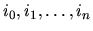
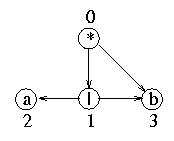
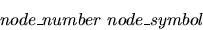
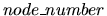
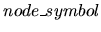
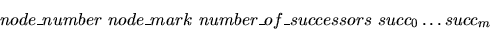
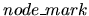
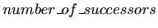
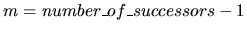

A grammar of a language is a set of rules which show the way syntactically
correct sentences are build in the language. If the number of sentences is
finite then these rules can be specified as a directed acyclic AND-OR graph,
as that illustrated in figure 1. We assume, by convention, that the AND nodes
are marked by `*', the OR nodes are marked by `|' and the
leaf nodes are labeled by any printable character different than `*' and
`|'. Each node of the graph designates a sequence of sentences.
Generally, such a sequence can contain identical members. We say that a node
can generate the sequence of sentences it designates as follows:
- A leaf generates a single sentence which is the label of the node. For example the
node labeled `a' in figure 1 generates the sentence `a'.
- An OR node generates the sequence of sentences which is the union of the
sequences generated by its successors. For instance, the sole OR node in figure 1 generates
the sequence of sentences `a', `b'. The order of generation (i.e. the order
of sentences in the sequence) is the order of the node successors.
- An AND node generates sentences computed as the concatenation of the
sentences generated by its successors. If there are n successors the concatenation uses n
sentences, each generated by a successor. In addition, the concatenation is performed left
to right according to the order of the successors. For example, the AND node from figure
1 generates the sequence of sentences `ab', `bb'. This sequence is computed by
appending
the sentence generated by the leaf node `b' to each sentence generated by the OR node.
Generally, if

is the compound index of the i-th sentence generated by an
AND node with n successors, where ik is the index of a sentence corresponding to the
k-th successor, then the sequence of sentences generated by the AND node is in
lexicographic ascending order of the compound indexes of its members.

Figure 1: An AND-OR graph
The sentences generated by the root node of the graph are the sentences of the
language whose syntax is described by the graph. The graph from figure 1 describes a
language with two sentences `ab' and `bb'.
The sentences designated by a node of the graph can be generated all at once, or
incrementally, a number of sentences at a time. The term incrementally means that the
sentences generated at a given time are the next sentences which follow from those
previously generated. For example, an incremental generator working for the root node of
the graph in figure 1 will be able to generate on its first call the sentence `ab'
and on its
second call the sentence `bb'. By convention, if the sentences the node are exhausted the
generator restarts with the first sentence of the node. In the example above for the third
call the generator will produce `ab'.
Your problem is to write a program which behaves as an incremental
sentence generator. The program reads a graph, as explained below, and then, one at a
time, an integer k. Let |k| be the absolute value of k. The program generates the
next |k|
sentences of the root node of the graph, prints k and, if k > 0, prints the generated
sentences. The program continues with a new set of data, if any, when it reads a null
value.
The program reads all its data sets from a text input file. The integer from the first
line of the file is the number of data sets. Each data set contains a graph description and a
sequence of integers which control the sentence generation process for the graph.
The graph is read from the input file as follows:
- 1.
- The first line of the graph data contains a positive integer, say n, which is the
number of graph nodes.
- 2.
- The next n input lines describe the nodes, a line for each node of the graph. The
nodes are numbered from 0 to n-1. The root node is always numbered 0. For a leaf node
the input line has the format

where

is a positive integer and

is a character.
If the node is an AND or an OR node the input line is

where
is a positive integer,

is the character
`*' for an
AND node or the character `|' for an OR node, the

is a strictly
positive integer, and succi, i= 0,m (
), is a
positive integer
designating the number of a graph node which is a successor of the currently described node.
All the elements of an input line start from the beginning of the line and are
separated by single spaces. Moreover, it is known that a graph can have at most 50
nodes, each node with at most 10 successors, and the length of a sentence can be at
most 80 characters. In the example below, the first line declares a single data set, the
next 5 lines specify the graph from figure 1 and the remaining 3 lines control
the sentence generation process.
For each graph read from the input file, the output of the
program (on a text file) is as follows: for each integer k,
which is read after a graph description, the program outputs k
and, if k > 0 the next k sentences of the root node, one
sentence on a line. Each sentence starts at the beginning of the
line and there are no spaces between the sentence characters.
If k < 0 the generated sentences are not printed.
1
4
0 * 2 1 3
1 | 2 2 3
2 a
3 b
-1
3
0
-1
3
bb
ab
bb
0
Miguel Revilla
2001-01-05